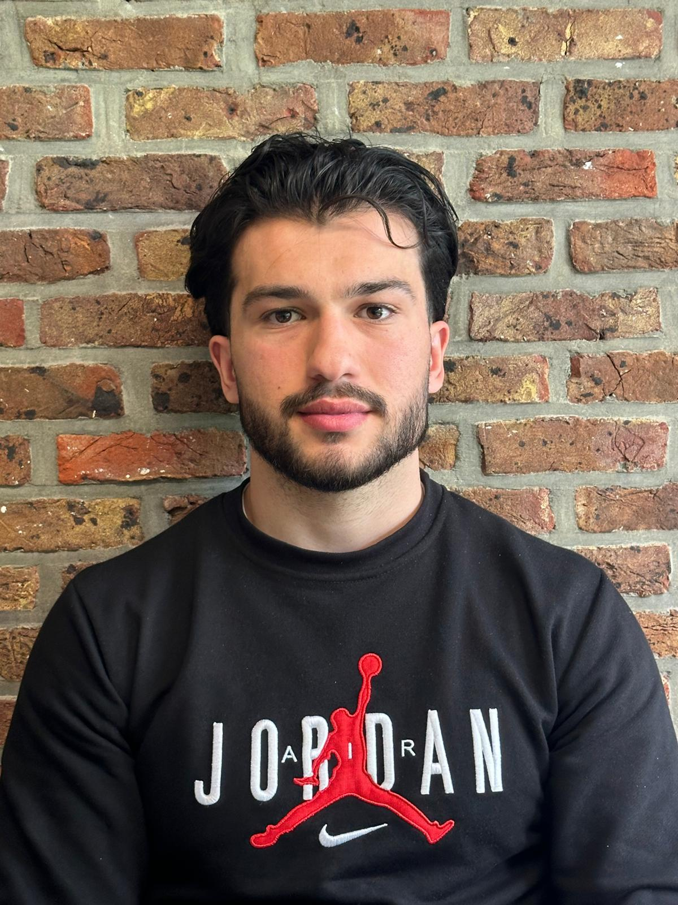

Welkom op mijn portfolio

Wie ben ik?
Hallo, ik ben Mohammad Bast. Ik studeer Programming en ik leer graag hoe websites en applicaties gemaakt worden. op deze site vind je mijn cv, mijn ervaring en wat ik doe naast mijn studie.
Mijn sterke en zwakke punten
Ik ben goed in logisch nadenken en ik los graag problemen op. Als iets niet werkt, zoek ik net zo lang tot ik de fout vind.
Minder goed ben ik in presenteren voor een groep. Daar werk ik aan door het vaker te oefenen tijdens opdrachten.
Mijn intresses en hobby's
Naast programmeren heb ik nog andere intresses. Meer daarover lees je op mijn hobbypagina.
Mijn studies
Op dit moment volg ik de opleiding programming. wat ik daarvoor deed, lees je op de pagina Ervaring.